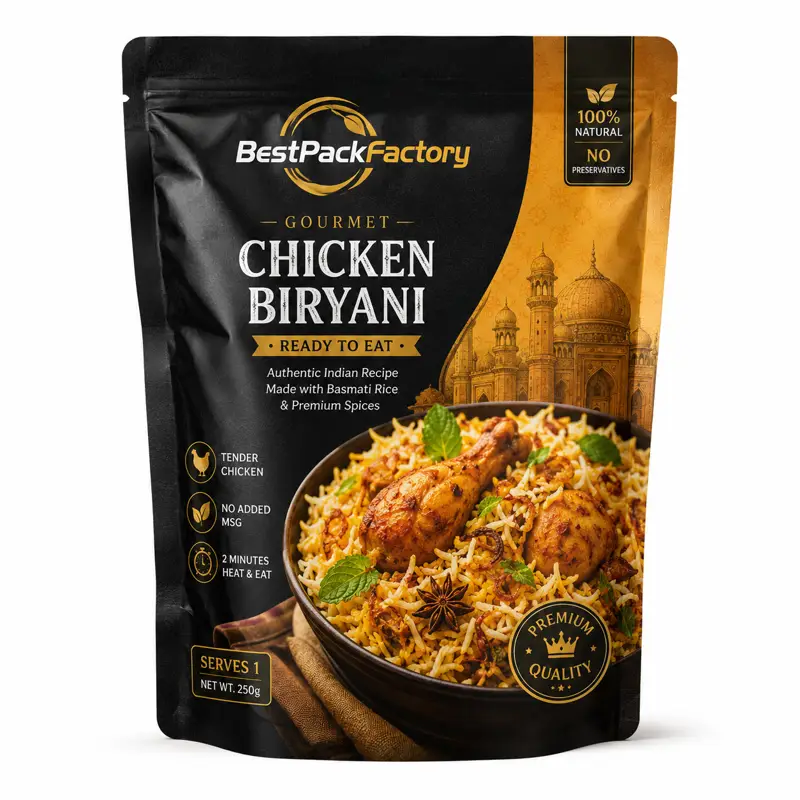

Custom Retort Pouches for Ready Meal Packaging — factory-direct from Shenzhen with MOQ 500 PCS, 24-hour RFQ response, free dielines and worldwide shipping. Custom size, materials (PET / AL / PE barrier films, kraft paper with PLA liner, metallized films), printing and finishes; sampling in 5–7 days after artwork approval.
High-performance retort pouches for ready-to-eat meals, soups, curry, and pre-cooked food requiring high-temperature sterilization.
BestPackFactory supplies this product for food processors, ready meal brands, military suppliers and enterprise packaging buyers. We support custom size, material structure (foil/clear), artwork, and retort temperature up to 135°C.
| Business Model | B2B RFQ only, no retail checkout |
| MOQ | 500 PCS |
| Customization | Size, material (Retort grade), logo, color, finish, easy-tear notch |
| Best For | Ready meal brands, soup manufacturers, curry brands and MRE suppliers |
| Contact | Sales Manager: Lisa Wu Email: lisa@colorprintingpackage.com WhatsApp +86 158 8653 0985 |
What is the maximum retort temperature?
Our standard retort pouches support 121°C. We also offer high-retort options for 131°C or 135°C sterilization.
Do you offer clear retort pouches?
Yes. We use specialty high-barrier clear films (like AlOx or SiOx coated PET) for clear retort pouches that are microwaveable.
Are they puncture resistant?
Yes. We include a Nylon (BOPA) layer to ensure high puncture resistance and durability during the retort process and transport.
The table below is written for industrial RFQ comparison. Final production specification is confirmed by retort chamber testing and shelf-life simulation.
| Material structure | R-CPP 70µm / AL 7µm / NY 15µm / PET 12µm; PET/NY/R-CPP for clear retort |
|---|---|
| Sterilization condition | 121°C / 131°C / 135°C retort sterilization for 30–60 minutes |
| Barrier target | OTR ≤ 0.5 cc/m²·day; WVTR ≤ 0.5 g/m²·day for foil retort pouches |
| Puncture resistance | ≥ 15 N for bone-in ready meal protection |
| Seal strength | ≥ 50 N / 15 mm (Using retort-grade high-temperature adhesive) |
| Typical capacity | 150g, 250g, 500g, 1kg ready meals; military MRE compatible |
| Bottom style | Stand-up pouch (Doyen/K-seal) / Flat pouch (3-side seal) |
| Surface finish | Glossy, Matte Retort Overprint Lacquer, hot foil optional |
| Printing registration tolerance | ±0.3 mm for multi-color gravure printing |
| Recommended test | Retort chamber simulation + seal strength test post-retort + residual air test |
| MOQ | 500 PCS per custom size / artwork |
| Artwork file | AI / PDF / PSD accepted; vector logo required; 3 mm bleed |
| Color tolerance | ΔE ≤ 3.0 against approved digital proof |
| Dimension tolerance | ±2 mm for pouch size |
| Quality inspection | AQL 2.5 for major defects; 100% seal integrity check |
| RFQ data required | Size, sterilization temperature/time, product weight, artwork, quantity, destination |
Click below to contact us quickly by WhatsApp or email. We can help with dieline, samples, printing, materials and worldwide shipping.
💬 Chat on WhatsApp ✉ Email Inquiry lisa@colorprintingpackage.comMOQ is 500 PCS per custom size and artwork. Sample orders can be arranged first so you can approve structure, printing and finish before mass production.
Dieline and artwork proof within 24 hours. Physical samples typically 5–7 working days after artwork confirmation.
Yes. We provide free dielines and structural design support based on your product dimensions before you place an order.
We quote FOB Shenzhen, CIF, EXW and DDP. Freight is calculated by destination country, quantity and packing method.
Send your product dimensions and quantity to lisa@colorprintingpackage.com or message us on WhatsApp — we reply within 24 hours.